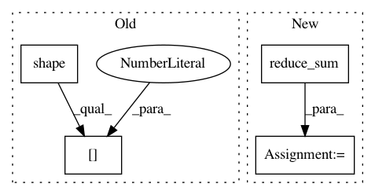

f55217e5fee88bc38e58e62e886f79e561c4d069,texar/losses/losses_utils.py,,reduce_batch_time,#Any#Any#Any#Any#Any#Any#,110
Before Change
if reduce_batch:
sequence = tf.reduce_sum(sequence, axis=[0])
if average_across_batch:
sequence = sequence / tf.to_float(tf.shape(sequence_length)[0])
return sequence
After Change
if sequence_length is None:
sequence = tf.reduce_mean(sequence, axis=[1])
else:
sequence = tf.reduce_sum(sequence, axis=[1])
if average_across_timesteps:
sequence = sequence / tf.to_float(sequence_length)
if sum_over_batch:
sequence = tf.reduce_sum(sequence, axis=[0])
elif average_across_batch:
sequence = tf.reduce_mean(sequence, axis=[0])
return sequence
In pattern: SUPERPATTERN
Frequency: 3
Non-data size: 4
Instances
Project Name: asyml/texar
Commit Name: f55217e5fee88bc38e58e62e886f79e561c4d069
Time: 2018-08-14
Author: zhitinghu@gmail.com
File Name: texar/losses/losses_utils.py
Class Name:
Method Name: reduce_batch_time
Project Name: GPflow/GPflow
Commit Name: 48270681afc13081094f7f398a1e194c6b07ba9b
Time: 2018-01-03
Author: dutordoirv@gmail.com
File Name: gpflow/models/gplvm.py
Class Name: BayesianGPLVM
Method Name: _build_likelihood
Project Name: pierluigiferrari/ssd_keras
Commit Name: d533214900cea56a4ec0be87577e97d3807b6bc5
Time: 2017-04-06
Author: pierluigi.ferrari@gmx.com
File Name: keras_ssd_loss.py
Class Name: SSD_Loss
Method Name: compute_loss